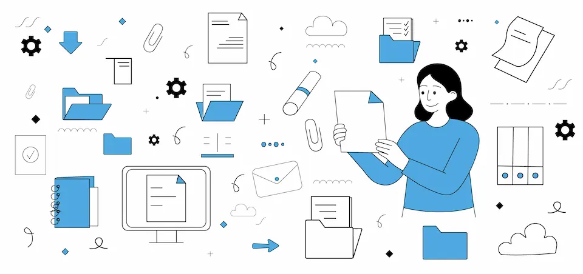

Купити електромобіль в Україні: як вибрати, перевірити батарею та знайти варіанти на ринку

Електромобілі в Україні впевнено виходять із ніші ентузіастів і стають масовим транспортом. Їх дедалі частіше обирають для щоденних поїздок містом, відряджень і навіть подорожей між регіонами. Ринок розширюється, зарядна інфраструктура росте, а вибір моделей уже не обмежується декількома варіантами. Водночас рішення купити електромобіль потребує уважності. Тут важливо не лише обрати модель, а й розібратися з батареєю, запасом ходу, інфраструктурою та реальними умовами експлуатації в Україні.
Переваги електромобіля
Електромобіль змінює сам підхід до керування. Водій отримує миттєвий відгук на натискання педалі акселератора, плавний старт без ривків і тишу в салоні навіть у щільному трафіку. У місті це відчувається особливо: авто не витрачає енергію на холостому ходу, а система рекуперації повертає частину заряду під час гальмування.
Власник економить на щоденній експлуатації. Вартість зарядки нижча за витрати на бензин або дизель, а конструкція без класичного двигуна внутрішнього згоряння зменшує кількість витратних матеріалів. Не потрібно міняти мастило, свічки чи ремені. Менше механіки - менше потенційних несправностей. До цього додається можливість заряджати авто вдома або на роботі, що знімає залежність від АЗС і дозволяє планувати поїздки без поспіху.
Головні критерії вибору
Перед тим, як ухвалити рішення, варто ретельно перевірити автомобіль. Електрокар має свої особливості, і поверхневий огляд тут не спрацює. Детальна перевірка допоможе уникнути прихованих дефектів, заниженого ресурсу батареї чи проблем із зарядкою.
Основні критерії вибору:
- Запас ходу. У техпаспорті вказують показник за циклом WLTP або EPA. В реальних умовах він залежить від стилю керування, температури та навантаження. Для міста часто достатньо 200-300 км, для міжміських поїздок краще дивитися на 350 км і більше.
- Швидкість зарядки. Підтримка швидкої DC-зарядки значно скорочує час у дорозі. Потужність 50 кВт - базовий рівень, 100-150 кВт - відчутна перевага.
- Батарея: стан і деградація. Ємність з роками зменшується. Важливо перевірити SOH (State of Health) та історію заряджань.
- Інфраструктура під ваші маршрути. Якщо щоденний маршрут проходить повз зарядні станції - це один сценарій. Якщо доводиться долати 300 км трасою без швидкої зарядки - інший.
- Програмне забезпечення. Для сучасних моделей важливі оновлення та відсутність помилок у системі керування.
Чекліст перевірки електромобіля
Перед укладанням угоди варто пройтися конкретним списком. Такий підхід дозволяє не покладатися лише на слова продавця й отримати об’єктивну картину стану авто:
- Діагностика батареї через OBD. Дає змогу перевірити фактичну ємність, кількість циклів заряджання та баланс комірок.
- Огляд зарядного порту. Виявляє пошкодження контактів або сліди перегріву.
- Тест-драйв із перевіркою рекуперації. Плавне гальмування та стабільний розгін свідчать про коректну роботу електросистеми.
- Перевірка історії авто. Важливо переконатися, що автомобіль не був затоплений або серйозно пошкоджений.
- Аналіз документів. Сертифікація, митне оформлення, реєстрація - усе повинно бути без розбіжностей.
Популярні моделі на українському ринку
Nissan Leaf
Один із наймасовіших електрокарів в Україні. Хетчбек приваблює доступністю на вторинному ринку та простотою експлуатації. Версії з батареями різної ємності дозволяють обрати баланс між ціною й запасом ходу.
Tesla Model 3
Седан із великим пробігом на одному заряді та сучасною електронікою. Водії цінують його за динаміку, мінімалістичний салон і регулярні оновлення програмного забезпечення.
Volkswagen ID.4
Кросовер із просторим салоном і практичним форматом кузова. Підходить для сімейних поїздок, поєднує комфорт і достатній запас ходу для міжміських маршрутів.
Hyundai Kona Electric
Компактний електричний кросовер із хорошою енергоефективністю. Його обирають ті, хто шукає універсальний варіант для міста та передмістя.
Сьогодні більшість покупців починають пошук в інтернеті. Актуальні пропозиції можна переглянути за посиланням:https://imperiya-auto.com.ua/ - там зібрані різні моделі, що допомагає швидко зорієнтуватися в ринку та обрати відповідний варіант. Онлайн-каталоги дозволяють порівняти комплектації, пробіг, ємність батареї та ціну без зайвих поїздок. Зручно фільтрувати варіанти за роком випуску, типом кузова чи регіоном.
Електромобіль в Україні вже став повноцінною альтернативою традиційному транспорту. Щоб купити електромобіль без зайвих ризиків, варто уважно перевірити технічний стан, батарею та документи, а також співставити можливості авто зі своїми маршрутами. Раціональний підхід і детальний аналіз ринку допомагають зробити виважений вибір і отримати максимум користі від електротяги.